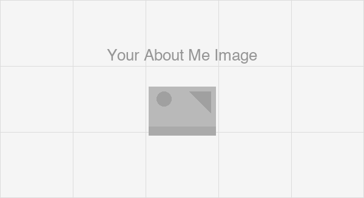

[YOUR NAME]
[YOUR JOB TITLE]
[YOUR TAGLINE — e.g., Turning spatial data into insights | GIS | Remote Sensing | Python]
About Me
[Replace this paragraph with your own bio. Write 3–4 sentences covering: your background and what you specialize in, the kinds of problems you work on, the tools and methods you use, and what you are currently looking for. Example below:]
I am a geospatial data scientist with a background in remote sensing and machine learning. I work on extracting actionable insights from satellite imagery and large spatial datasets using Python, Google Earth Engine, and open-source GIS tools. I am passionate about applying GeoAI techniques to real-world challenges in land use mapping, climate monitoring, and urban planning. I am currently seeking opportunities in [YOUR TARGET ROLE] in [YOUR TARGET LOCATION].

Skills
-
GIS & Remote Sensing
- QGIS, ArcGIS Pro, Google Earth Engine
- GDAL / OGR, GRASS GIS
- Multispectral and SAR image analysis
- Cloud Native Geospatial (COG, STAC, Zarr)
-
Programming
- Python — GeoPandas, NumPy, Pandas, Matplotlib
- R — sf, terra, ggplot2
- JavaScript — Leaflet, MapLibre GL
- SQL, PostgreSQL + PostGIS
-
Machine Learning & GeoAI
- Supervised classification — Random Forest, XGBoost
- Deep learning for image segmentation — U-Net, SAM
- scikit-learn, PyTorch, TensorFlow
- Object detection in satellite imagery
-
Web Mapping & Data
- Leaflet.js, Folium, MapLibre GL JS
- Cloud storage — AWS S3, Google Cloud Storage
- Data formats — GeoTIFF, GeoParquet, NetCDF
- Streamlit for data-driven web apps
-
Data & Cloud
- PostgreSQL + PostGIS
- Cloud storage: AWS S3, Google Cloud Storage
- Data formats: GeoJSON, GeoTIFF, NetCDF, Zarr, GeoParquet
-
Drone / UAV Data Processing
- Mission planning and flight operations
- Photogrammetry: Agisoft Metashape, OpenDroneMap
- Point cloud processing: CloudCompare, PDAL